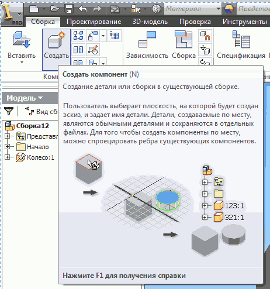
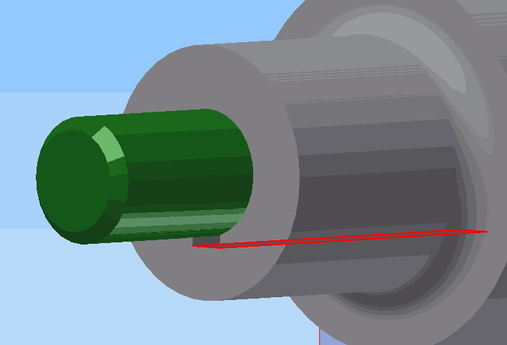
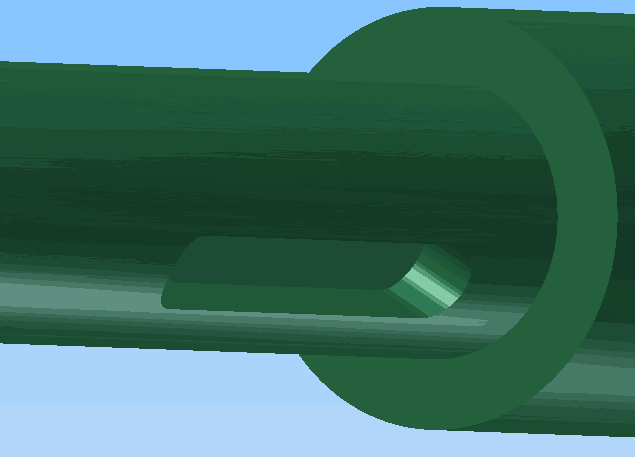

Создадим сборку детали Колесо с деталью Ось. Модель детали
Ось можно создать как отдельную деталь по аналогии с деталью Колесо, с последующей вставкой в сборку, а можно создать её по месту. Этот способ и рассмотрим ниже.
Создадим 3D - сборку. Файл — Создать — Сборка.Вставим в сборку деталь Колесо через Вставить — Вставить компонент.
Создадим новую деталь Ось. Зайдем в Создать компонент...

...и сохраним его под именем Ось.
Снизу окна появится запрос Укажите плоскость для создания компонента
. Укажите грань на детали.В дереве модели деталь Колесо закрасится серым цветом (станет неактивной) и появится деталь Ось, которую можно создавать в обычном порядке.
Создадим эскиз. В качестве плоскости для эскиза укажем грань детали
Колесо.
Построим два элемента выдавливания и фаски по аналогии с тем, как мы проводили построения для детали Колесо. (Ось для наглядности покрашена в зелёный цвет.)
Приступим к созданию шпоночной канавки на детали Ось. В качестве плоскости для создания эскиза выберем грань шпоночной канавки на детали Колесо.

Можно временно погасить видимость детали Колесо. Щёлкните
по Колесо на дереве модели и уберите галочку с Видимость.
Спроецирум контуры детали Ось на плоскость эскиза.
Зайдём в команду Проецирование геометрии......и выберем оба выдавливания.
Развернём деталь с помощью видового куба рабочей плоскостью к нам и построим точку на оси детали в произвольном месте по длине (это будет центальная точка паза).Поставим размер до неё и изменим его на 30мм. Точка станет в нужном месте.
Зайдём в команду Прямоуголниик — По двум точкам и центру.Построим прямоугольник, указав сначала центр в построенной точке, затем ещё одну точку в произвольном месте.
Укажем размеры прямоугольника по размерам канавки.Выберем команду Сопряжение.
Установим радиус сопряжения 3мм и укажем поочерёдно угловые отрезки.Завершим эскиз.
Вызовем команду Выдавливание, укажем глубину выдавливания 6мм с вычитанием и нажмём ОК.В результате получим шпоночную канавку. Видимость плоскости для построения эскиза погасим.

Щёлкнем в свободном месте окна и в контексном меню выберем
Закончить редактирование.Вернём видимость колесу. (ПКМ по Колесо в дереве модели и выбрать Видимость).